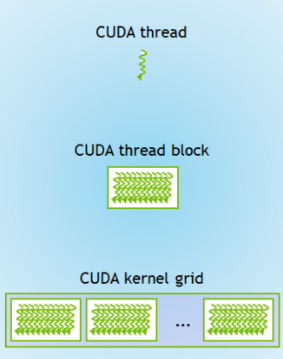

GPUs
Contents
GPUs#

Note
This GPU lesson focuses primarily on NVIDIA CUDA which is a proprietary solution, and that there are open-source alternatives such as OpenCL. However, at present CUDA is the most used platform for GPU programming and therefore is included in this course. Please note this means the following code will not run on Apple Macs at they do not have compatible hardware
Tip
If you’re in COLAB or have a local CUDA GPU, you can follow along with this section (i.e., uncomment the GPU code bits).
For those in COLAB, ensure the session is using a GPU by going to: Runtime > Change runtime type > Hardware accelerator = GPU.
GPUs (Graphics Processing Units) are optimised for numerical operations, while CPUs (central processing units) perform general computation.
Originally, GPUs handled computer graphics. However, they are now used to do a wide range of computations too. Hence, the term General Purpose GPU (GPGPU).
GPU hardware is designed for data parallelism, where high throughputs are achieved when the GPU is computing the same operations on many different elements at once.
You could use other types of accelerators too, though we’re not going to cover those here.
Numba for CUDA GPUs#
Earlier we covered how Numba works on single CPUs with @njit and multiple CPUs with parallel = True.
As a recap:
import numpy as np
from numba import njit
x = np.arange(1.0e7, dtype=np.int64)
So, for a single CPU:
@njit
def my_serial_function_for_cpu(x):
return np.cos(x) ** 2 + np.sin(x) ** 2
%%timeit
my_serial_function_for_cpu(x)
275 ms ± 753 µs per loop (mean ± std. dev. of 7 runs, 1 loop each)
And, for multiple CPUs:
@njit(parallel=True)
def my_parallel_function_for_cpu(x):
return np.cos(x) ** 2 + np.sin(x) ** 2
%%timeit
my_parallel_function_for_cpu(x)
143 ms ± 138 µs per loop (mean ± std. dev. of 7 runs, 1 loop each)
Note
Here we used njit as this automates the parallelisation process.
This is in contrast to vectorize where manual effort is required for parallelisation.
vectorize for GPUs#
Numba also works on CUDA GPUs using @vectorize or @cuda.jit.
This is suitable for bigger data sizes (> 1 MB) and high compute intensities.
This adds additional overhead due to moving data to and from GPUs (memory management).
Similar to our examples in the compiler lesson, we need to specify the types and target in the signature (i.e., the decorator arguments).
Here, the types are specificed slightly differently i.e., output types(input types).
Attention
Not all NumPy code will work on the GPU. In the following example, we will need to use the math library instead.
import math
from numba import float32, vectorize
x = np.arange(1.0e7, dtype=np.float32)
@vectorize(["float32(float32)"], target="cuda")
def my_serial_function_for_gpu(x):
return math.cos(x) ** 2 + math.sin(x) ** 2
# %%timeit
# my_serial_function_for_gpu(x)
Numba also supports generalized ufuncs (covered in the compiler lesson) on the GPU using guvectorize.
Custom CUDA kernels#
Kernel functions are GPU functions called from CPU code.
Kernels cannot explicitly return a value. Instead, all result data must be written to an array passed to the function (e.g., called out). This array can then be transferred back to the CPU.
Kernels work over a grid of threads. This grid needs to be defined in terms of the number of blocks in the grid and the number of threads per block. The indices of this grid are used to add values to the out array. The indices can be found using cuda.grid().
CUDA kernels are compiled using the numba.cuda.jit decorator.
Note
numba.cuda.jit is different to numba.jit, which is for CPUs.
# from numba import cuda
# print(cuda.gpus)
This should return a message similar to:
<Managed Device 0>.
You can also run the bash command nvidia-smi within the IPython cell:
# !nvidia-smi
This returns something like the table below. This shows we have access to a NVIDIA Tesla T4 GPU.
Tue Feb 22 13:59:03 2022
+-----------------------------------------------------------------------------+
| NVIDIA-SMI 460.32.03 Driver Version: 460.32.03 CUDA Version: 11.2 |
|-------------------------------+----------------------+----------------------+
| GPU Name Persistence-M| Bus-Id Disp.A | Volatile Uncorr. ECC |
| Fan Temp Perf Pwr:Usage/Cap| Memory-Usage | GPU-Util Compute M. |
| | | MIG M. |
|===============================+======================+======================|
| 0 Tesla T4 Off | 00000000:00:04.0 Off | 0 |
| N/A 66C P0 30W / 70W | 144MiB / 15109MiB | 0% Default |
| | | N/A |
+-------------------------------+----------------------+----------------------+
+-----------------------------------------------------------------------------+
| Processes: |
| GPU GI CI PID Type Process name GPU Memory |
| ID ID Usage |
|=============================================================================|
+-----------------------------------------------------------------------------+
So, a simple example to add two numbers together:
# @cuda.jit
# def add_kernel(x, y, out):
# index = cuda.grid(1)
# out[index] = x[index] + y[index]
Let’s define some input variables:
# n = 4096
# x = np.arange(n).astype(np.int32) # [0...4095] on the host (CPU)
# y = np.ones_like(x) # [1...1] on the host (CPU)
Now, let’s move these input variables from the host (CPU) to the device (GPU) for the work:
# x_on_device = cuda.to_device(x)
# y_on_device = cuda.to_device(y)
# out_on_device = cuda.device_array_like(x_on_device)
Now, we choose the block size, by defining how many blocks are in the grid and how many threads are in each of those blocks.
These two numbers multipled together is the size of the grid (for our 1D example).

Some rules of thumb are:
Blocks per grid should be a multiple of 32.
Threads per block should be a multiple of 128.
# blocks_per_grid = 32
# threads_per_block = 128
Now, we can call the kernel function.
First, add the grid size arguments.
Then, we pass the input/output variables as arguments to the function.
# add_kernel[blocks_per_grid, threads_per_block](x_on_device, y_on_device, out_on_device)
As these CUDA kernels don’t return a value, we can synchronise the device (GPU) back to the host (CPU) to get the result back.
# cuda.synchronize()
# print(out_on_device.copy_to_host())
# # Should be [ 1 2 3 ... 4094 4095 4096]
For more information on CUDA, see the training courses:
NVIDIA workshop on Fundamentals of Accelerated Computing with CUDA Python
Detailed look at custom CUDA kernels and GPU memory management.
RAPIDS#
RAPIDS is a range of accelerated data science libraries from NVIDIA.
There are a wide variety of tools matching up to familiar libraries:
Arrays and matrices
cuPy for NumPy and SciPy
Tabular data
cuDF for Pandas
Machine learning
Graphs and networks
Multiple GPUs
Dask with CUDA, cuDF, cuML, and others.
cuPy#
NumPy for the CPU
import numpy as np
x_cpu = np.random.rand(1_000, 1_000)
y_cpu = np.random.rand(1_000, 1_000)
%%timeit
z_cpu = np.dot(x_cpu, y_cpu)
16 ms ± 60.6 µs per loop (mean ± std. dev. of 7 runs, 100 loops each)
CuPy for the GPU
# import cupy as cp
# x_gpu = cp.random.rand(1_000, 1_000)
# y_gpu = cp.random.rand(1_000, 1_000)
# %%timeit
# z_gpu = cp.dot(x_gpu, y_gpu)
You can move arrays between the CPU and GPU as follows:
# z_gpu = cp.asarray(z_cpu) # from cpu to gpu
# z_cpu = cp.asnumpy(z_gpu) # from gpu to cpu
For more information on RAPIDS, see the training courses:
NVIDIA workshop on Fundamentals of Accelerated Data Science (RAPIDS).
Diagnostics#
Similar to the Dask Dashboard, NVIDIA has a GPU Dashboard called NVDashboard.
These real-time diagnostics are provided via a Bokeh server and a Jupyter Lab extension.
They are a great way to manage your GPU utilisation, resources, throughput, and more.
More information is here.

JAX#
JAX enables:
NumPy on the CPU and GPU (via XLA, Accelerated Linear Algebra, a compiler for linear algebra).
Automatic differentiation of native Python and NumPy code (via Autograd).
Jitcompiler to speed up code.Automatic vectorisation through
vmap.
JAX can replace NumPy for GPUs#
If it can’t find a GPU, then it will fall back to the CPU.
import jax
import jax.numpy as jnp
import numpy as np
x_np = np.arange(10)
print(type(x_np))
x_np
<class 'numpy.ndarray'>
array([0, 1, 2, 3, 4, 5, 6, 7, 8, 9])
x_jnp = jnp.arange(10)
print(type(x_jnp))
x_jnp
WARNING:absl:No GPU/TPU found, falling back to CPU. (Set TF_CPP_MIN_LOG_LEVEL=0 and rerun for more info.)
<class 'jaxlib.xla_extension.DeviceArray'>
DeviceArray([0, 1, 2, 3, 4, 5, 6, 7, 8, 9], dtype=int32)
However, there are some differences between JAX and NumPy.
For example, JAX arrays are immutable (i.e., you can’t change them once their made).
x_np[0] = 10
x_np
array([10, 1, 2, 3, 4, 5, 6, 7, 8, 9])
try:
x_jnp[0] = 10
print(x_jnp)
except TypeError:
print("Sorry, you can't change JAX arrays once their made.")
Sorry, you can't change JAX arrays once their made.
Instead, you can create a copy with the change:
updated_x_jnp = x_jnp.at[0].set(10)
updated_x_jnp
DeviceArray([10, 1, 2, 3, 4, 5, 6, 7, 8, 9], dtype=int32)
Also, random arrays are created differently:
x_np = np.random.normal(size=(3_000, 3_000))
from jax import random
random_key = random.PRNGKey(0)
x_jnp = random.normal(random_key, (3_000, 3_000), dtype=jnp.float32)
Now, you could multiply arrays:
%timeit np.dot(x_np, x_np.T)
228 ms ± 1.18 ms per loop (mean ± std. dev. of 7 runs, 1 loop each)
%timeit jnp.dot(x_jnp, x_jnp.T).block_until_ready()
223 ms ± 1.28 ms per loop (mean ± std. dev. of 7 runs, 1 loop each)
By default, this will transfer data from the host (CPU) to the device (GPU).
To avoid this and put data onto the device (GPU):
from jax import device_put
x_jnp = device_put(x_jnp)
%timeit jnp.dot(x_jnp, x_jnp.T).block_until_ready()
223 ms ± 702 µs per loop (mean ± std. dev. of 7 runs, 1 loop each)
In general, the speed comparison between JAX and NumPy is complicated and depends on a variety of things (read more here).
@jit compiler#
Let’s see an example of using the JAX @jit compiler to speed up a function:
from jax import jit
x = random.normal(random_key, (1_000_000,))
Here were using an example for the SELU (Scaled Exponential Linear Unit) activation function (don’t worry what this is).
def slow_selu(x, alpha=1.67, lmbda=1.05):
return lmbda * jnp.where(x > 0, x, alpha * jnp.exp(x) - alpha)
%%timeit
slow_selu(x).block_until_ready()
1.6 ms ± 8.56 µs per loop (mean ± std. dev. of 7 runs, 1,000 loops each)
fast_selu = jit(slow_selu)
Remember from our compiler lesson, that the first call to a JIT-decorated function compiles it:
%%timeit -n 1 -r 1
fast_selu(x).block_until_ready()
37.1 ms ± 0 ns per loop (mean ± std. dev. of 1 run, 1 loop each)
Then all subsequent calls to it use the cached, fast version:
%%timeit -n 1 -r 1
fast_selu(x).block_until_ready()
946 µs ± 0 ns per loop (mean ± std. dev. of 1 run, 1 loop each)
Automatic vectorisation with vmap()#
vmap maps a function over array axes.
This pushes the map loop lower down for better performance.
Let’s see an example of multiplying a matrix by a batch of vectors (don’t worry what this function does, just focus on the JAX bits):
from jax import vmap
matrix = random.normal(random_key, (150, 100))
batch_vectors = random.normal(random_key, (10, 100))
def multiplying_matrix_by_vector(vector):
return jnp.dot(matrix, vector)
So, first apply this function in a simple batch:
def simple_batch(batch_vectors):
return jnp.stack([multiplying_matrix_by_vector(vector) for vector in batch_vectors])
%timeit simple_batch(batch_vectors).block_until_ready()
1.1 ms ± 663 ns per loop (mean ± std. dev. of 7 runs, 1,000 loops each)
Now, let’s instead use a vmap batch to map the function over the matrix:
def vmap_batch(batch_vectors):
return vmap(multiplying_matrix_by_vector)(batch_vectors)
%timeit vmap_batch(batch_vectors).block_until_ready()
459 µs ± 730 ns per loop (mean ± std. dev. of 7 runs, 1,000 loops each)
And, let’s get even more performance by combining this with the jit compiler:
@jit
def faster_vmap_batch(batch_vectors):
return vmap(multiplying_matrix_by_vector)(batch_vectors)
%timeit faster_vmap_batch(batch_vectors).block_until_ready()
29.9 µs ± 21.6 ns per loop (mean ± std. dev. of 7 runs, 10,000 loops each)
There is lots more useful information in the documentation, such as a range of tutorials.
Exercises#
Exercise 1
In general, what kind of tasks are GPUs faster than CPUs for, and why?
Exercise 2
What Numba decorators can you use to offload a function to GPUs?
Exercise 3
How would you vectorize the the following function for GPUs?
def my_serial_function_for_gpu(x):
return math.cos(x) ** 2 + math.sin(x) ** 2
Exercise 4
What are ways you can check if your Python environment has access to a GPU?
Exercise 5
If you wanted to do NumPy style work on GPUs, could you use:
cuPy
JAX
Solutions#
Key Points#
Important
Use CUDA/Numba, RAPIDS, and JAX to write custom data science code for CUDA GPUs.
Further information#
Good practises#
Test out ideas on CPUs first, before moving to expensive GPUs.
Consider whether the calculation is worth the additional overhead of sending data to and from the GPU.
Minimise data transfers between the host (CPU) and the device (GPU).
Other options#
-
An alternative to Numba for accessing NVIDIA’s CUDA GPUs.
-
A swap-out replacement for NumPy from NVIDIA for distributed GPUs.
Early stages of development.
Requires a separate interperter to run (Legate).
Many libraries can use GPUs automatically if they can detect one e.g.,
TensorFlowandPyTorch.
Resources#
CuPy - Sean Farley, PyBay 2019.
cuDF - Mark Harris, PyCon AU 2019.